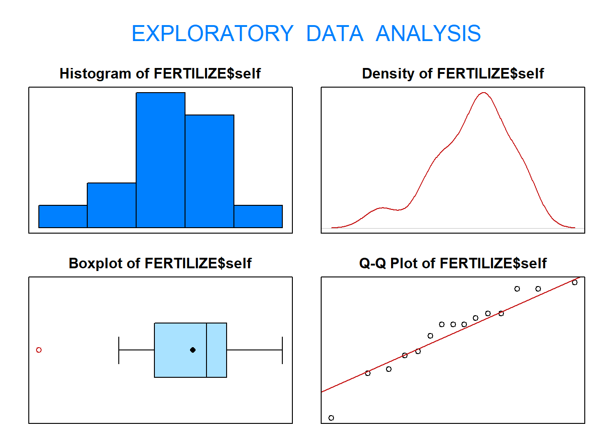
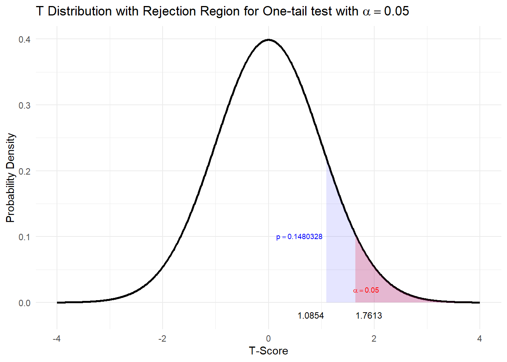

3 Example 2: Power of a test
A cell phone provider has estimated that it needs revenues of €2 million per day in order to make a profit and remain in the market. If revenues are less than €2 million per day, the company will go bankrupt. Likewise, revenues greater than €2 million per day cannot be handled without increasing staff. Assume that revenues follow a normal distribution with \(\sigma =\) €0.5 million and a mean of \(\mu\).
To find out more about their revenue they want to perform a hypothesis test \(H_0 : \mu = 2\) versus \(H_1 : \mu \neq 2\). To understand more about how hypothesis tests work, three scenarios will be presented to show how the power of a test can change: varying mu, varying significance level and varying sample size.
The power function is:
\[Power(\theta) = P(\text{reject }H_0|H_0 \text{ is false}) = P(\text{accept }H_1|H1)\] \[Power(\theta) = 1-\beta(\theta)\]
where \(\beta(\theta)\) is the probability of a type II error at a given \(\theta\)
3.1 Question 1
Graphically depict the power function for testing \(H_0 : \mu = 2\) versus \(H_1 : \mu \neq 2\) if \(n = 150\) and \(\alpha = 0.05\) for values of \(\mu\) ranging from 1.8 to 2.2.
Think about whether you are doing a one or two-tailed test and what values represent rejecting or no-rejecting them.
First make a vector of values of \(\mu\).
Then you will need to find the confidence values for our significance level \(\alpha\) which are used to calculate the power can be found for each \(\mu\).
The power values could be to be written as a data frame to make the plotting easier.
3.2 Question 2
Graphically depict the power function for testing \(H_0 : \mu = 2\) versus \(H_1 : \mu \neq 2\) when \(\mu_1 = 2.1\) and \(n = 150\) for values of \(\alpha\) ranging from 0.001 to 0.999.
Think about whether you are doing a one or two-tailed test and what values represent rejecting or no-rejecting them.
First make a vector of values of \(\alpha\).
Then you will need to find the confidence values for each \(\alpha\) which are used to calculate the corresponding test powers.
The power values could be to be written as a data frame to make the plotting easier.
3.3 Question 3
Graphically depict the power for testing \(H_0 : \mu = 2\) versus \(H_1 : \mu \neq 2\) when \(\mu_1 = 2.1\) and \(\alpha = 0.05\) for values of \(n\) ranging from 1 to 500.
Think about whether you are doing a one or two-tailed test and what values represent rejecting or no-rejecting them.
First make a vector of values of \(n\).
Then you will need to find the confidence values for each \(n\) which are used to calculate the corresponding test powers.
The power values could be to be written as a data frame to make the plotting easier.
3.4 Question 4
Think about each scenario above and select the true statements:
Question 1 - Varying mean
Question 2 - Varying significance level \(\alpha\)
Question 3 - Varying sample size \(n\)
Using the data frame Fertilize in the package PASWR, which contains the height in inches for plants for cross fertilization and self-fertilization, test if the data suggest that the average height of self-fertilized plants is more than 17 inches. (Use \(\alpha = 0.05\)).
- Does this data fit the required assumption of normality to perform a hypothesis test?
1 a) We can verify the normality assumption of the data using exploratory data analysis (EDA()).

## Size (n) Missing Minimum 1st Qu Mean Median TrMean 3rd Qu
## 15.000 0.000 12.750 16.375 17.575 18.000 17.575 18.625
## Max Stdev Var SE Mean I.Q.R. Range Kurtosis Skewness
## 20.375 2.052 4.209 0.530 2.250 7.625 -0.262 -0.647
## SW p-val
## 0.377The results from applying the function EDA() to self fertilized plants suggest it is not unreasonable to assume that plant height for self fertilized plants follows a normal distribution. Now, proceed with the five-step procedure.
- Step 1 - select the correct hypothesis:
To test whether the height of self fertilized plants is greater than \(17\) inches, the hypotheses are:
\[H_0 : \mu = 17 \quad \text{verses} \quad H_1 : \mu < 17\] \[H_0 : \mu = 17 \quad \text{verses} \quad H_1 : \mu > 17\] \[H_0 : \mu = 17 \quad \text{verses} \quad H_1 : \mu \neq 17\]
- Step 2 - Choose and calculate the test statistic (before standardisation).
The test statistic \(\bar{X}=\)
- The test statistic chosen is \(\bar{X}\) because \(E[\bar{X}] = \mu\).
## [1] 17.575The value of this test statistic is \(\bar{x} = \frac{\sum^n_{i=1}x_i}{n} = 17.575\)
- Step 3a - Finding rejection region \(t_{obs} > t_{1-0.05; df}\).
Find the degrees of freedom.
Find the critical value \(t_{1-0.05; df} =\)
- Because the standardized test statistic is distributed \(t_{14}\) and \(H_1\) is a upper one-sided hypothesis, the rejection region is the \(t_{obs} > t_{1-0.05; 14} = t_{0.95; 14}\)
- From the statistical tables, the t-value that corresponds to our significance level (critical value), \(t_{0.95; 14} = 1.7613\). Remember this is positive because we are discussing the upper tail of the t-distribution.
This same t-value can be found using R:
## [1] 1.76131- Step 3b - Finding the standardisied test statistic and p-value for our data.
The standardized test statistic under the assumption that \(H_0\) is true and its distribution are \(\frac{\bar{X}−\mu_0}{S/\sqrt{n}} \sim t_{df}\).
- Calculate the standardisied test statistic.
- Our standardised test statistic = \(\frac{\bar{X}−\mu_0}{S/\sqrt{n}} = \frac{17.575−17}{S/\sqrt{n}}\). From our data set in R we can obtain \(S\) and \(n\):
## [1] 2.051676## [1] 15This gives our standardised test statistic \(t_{obs}=\frac{\bar{X}−\mu_0}{S/\sqrt{n}} = 1.0854\):
## [1] 1.085437OR
The standardised test statistic can be found using:
##
## One Sample t-test
##
## data: FERTILIZE$self
## t = 1.0854, df = 14, p-value = 0.148
## alternative hypothesis: true mean is greater than 17
## 95 percent confidence interval:
## 16.64196 Inf
## sample estimates:
## mean of x
## 17.575- Calculate the p-value that corresponds to our standardised test statistic.
## [1] 0.1480328Graphically this could be shown:  Our standardised test statistic is greater than the critical value and outside our rejection region. Hence our p-value is greater than \(\alpha\)
OR
The p-value can be found using:
##
## One Sample t-test
##
## data: FERTILIZE$self
## t = 1.0854, df = 14, p-value = 0.148
## alternative hypothesis: true mean is greater than 17
## 95 percent confidence interval:
## 16.64196 Inf
## sample estimates:
## mean of x
## 17.575- Step 4 - Statistical Conclusion
Do we reject our null hypothesis?
- I. From the rejection region, we fail to reject \(H_0\) because the standardised test statistic is less than the critical value and hence outside the rejection region i.e \(t_{obs} = 1.0854 < 1.7613\).
OR
- From the p-value, we fail to reject \(H_0\) because the p-value\(0.1480 > 0.05\).
Whichever method we use, we fail to reject \(H_0\).
- Step 5 - English Conclusion
Is there statistical evidence to suggest a mean greater than 17?